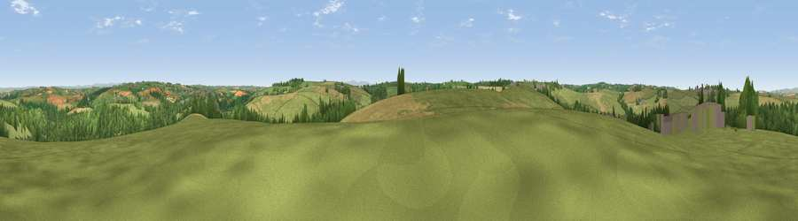

Viewpoint near Frithelstock
#20219 in England · top 44% of its area beats it · near Frithelstock · access?Where it is
The exact computed spot (SS 46775 19275). Click the marker for map links.
Public access: no public right of way or access land is recorded at this exact spot — it may be on private land. Computed from Natural England's CRoW access layer and OpenStreetMap rights of way — not the legal definitive map. Always verify locally.
The view, rendered

A 360° render of this exact spot computed from the terrain model, tree cover and land cover — summer colours, afternoon light, calibrated against photographs of famous viewpoints. Real trees, hedges and buildings will differ in detail.
The panorama
Grey silhouette: terrain skyline in each direction (720 bearings, Earth curvature and refraction included). Dashed green: skyline with trees (+15 m) and buildings (+8 m) as obstacles. Blue strip: how far the ground is visible on each bearing.
Where the view opens
Wedge length = distance to the farthest visible ground on that bearing (vegetation-aware). Rings at 10, 25 and 50 km.
What fills the view
60% grassland · 21% woodland · 18% cropland · 2% built-up
Angular shares of the visible panorama (visual magnitude), not map area. Landscape diversity 0.44 (0–1 Shannon).
Key numbers
More beautiful places nearby
The staircase of upgrades: each row has a higher view potential than everything closer. Driving times are estimates from straight-line distance, calibrated against real road routing — check an actual route before setting out.
| Place | Direction | Drive | Score |
|---|---|---|---|
| Viewpoint near Frithelstock | S · 0 km | ~1 min | 52.7 |
| Viewpoint near Little Torrington | SE · 4 km | ~10 min | 62.8 |
| Viewpoint near Littleham | NW · 5 km | ~12 min | 68.1 |
| Viewpoint near Weare Giffard | N · 5 km | ~12 min | 70.1 |
| Viewpoint near Bideford | N · 6 km | ~13 min | 73.5 |
| Babbacombe Hill | NW · 9 km | ~18 min | 78.7 |
| Viewpoint near Abbotsham | NW · 9 km | ~18 min | 79.9 |
| Viewpoint near Parkham | WNW · 9 km | ~18 min | 81.7 |
50.95248, -4.18283 · source: screening · position refined by local search. Computed location — check access rights before visiting.